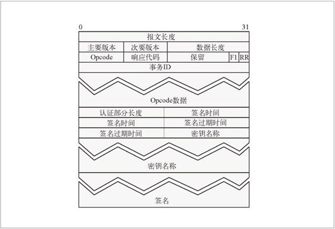

20.9 超文本缓存协议
之前我们讨论了 ICP，这个协议允许代理缓存向兄弟缓存查询文件是否存在。但设计 ICP 时考虑的是 HTTP/0.9 协议，因此，向兄弟缓存查询资源是否存在时，只允许缓存发送 URL。HTTP 版本 1.0 和 1.1 引入了很多新的请求首部，这些首部可以和 URL 一起用来确定文件是否匹配。因此，只在请求中发送 URL 可能无法得到精确的响应。
HTCP（超文本缓存协议）允许兄弟缓存之间通过 URL 和所有的请求及响应首部来相互查询文档是否存在，以降低错误命中的可能。而且 HTCP 允许兄弟缓存监视或请求在对方的缓存中添加或删除所选中的文档，并修改对方已缓存文档的缓存策略。
图 20-13 说明了一个 ICP 事务，此图也可以用来说明 HTCP 事务，后者是另一个对象发现协议。如果附近的缓存中有这个文档，发起请求的缓存可以打开一条到此缓存的 HTTP 连接，以获取那个文档的副本。ICP 和 HTCP 事务之间的区别体现在请求和响应细节上。
HTCP 报文的结构如图 20-15 所示。首部中包含了报文的长度和报文版本。数据部分开始是数据长度，包含了 opcode、响应代码、一些标记及 ID，最后是实际的数据。可选的认证部分跟在 Data 小节的后面。

图 20-15 HTCP 报文格式
报文字段的详细内容如下所述。
首部
Header 部分包含 32 位的报文长度，8 位的主要协议版本和 8 位的次要协议版本。报文长度包含所有首部、数据和认证部分的长度。
数据
Data 部分包含了 HTCP 报文，结构如图 20-15 所示。数据组件如表 20-6 所示。
表20-6 HTCP数据组件
| 组 件 | 描 述 |
|---|---|
| 数据长度 | 16 位的 Data 部分字节数，包含 Length 字段自身的长度 |
| Opcode | HTCP 事务的 4 位操作代码。表 20-7 列出了 Opcode 的完整内容 |
| 响应代码 | 说明事务成功或失败的 4 位键值。可能的值有： 0——没有进行认证，但需要进行认证； 1——需要进行认证，但没有得到满足； 2——未实现的Opcode； 3——不支持主要版本； 4——不支持次要版本； 5——不合适、不允许或非预期的Opcode。 |
| F1 | F1 是重载的——如果报文是一条请求，F1 就是请求端设置的 1 位标记，说明需要响应（F1=1）；如果报文是一条响应，F1 就是一个 1 位标记，用来说明应该将响应作为对整条报文的响应来解释（F1=1），还是将其作为对 Opcode 数据字段的响应来解释（F1=0） |
| RR | 用来说明报文是请求（RR=0）还是响应（RR=1）的 1 位标记 |
| 事务ID | 32 位的值，与请求端的网络地址组合在一起可以唯一地标识 HTCP 事务 |
| Opcode 数据 | Opcode 数据与 Opcode 有关。参见表20-7 |
表 20-7 列出了 HTCP Opcode 代码及其相应的数据类型。
表20-7 HTCP Opcode
| Opcode | 值 | 描 述 | 响应代码 | Opcode数据 |
|---|---|---|---|---|
| NOP | 0 | 本质上是一个 ping 操作 | 总是0 | 无 |
| TST | 1 | 如果有实体，就为0，如果没有提供实体，就为1 | 在请求中包含 URL 和请求首部，在响应中只包含响应首部 | |
| MON | 2 | 接受就为0，拒绝就为1 | ||
| SET | 3 | SET 报文允许缓存请求修改缓存策略。可以用于 SET 报文的首部参见表 20-9 | 接受就为0，忽略就为1 | |
| CLR | 4 | 如果曾经有过，但现在没有了，就为0；如果曾经有过，而且现在还有，就为1；如果从未有过，就为 2 |
20.9.1 HTCP认证
HTCP 报文的认证部分是可选的。其结构如图 20-15 所示，表 20-8 列出了它的认证组件。
表20-8 HTCP认证组件
| 组 件 | 描 述 |
|---|---|
| 认证部分长度 | 16 位的报文认证部分字节数，包含了长度字段自身的长度 |
| 签名时间 | 32 位数，表示从格林尼治标准时间 1970 年1 月1 日 00:00:00 开始，到产生签名的时间之间的秒数 |
| 签名过期时间 | 32 位数，表示从格林尼治标准时间 1970 年1 月1 日 00:00:00 开始，到签名过期时所经历的秒数 |
| 密钥名称 | 用来表示共享密钥名称的字符串。密钥字段有两个部分：用来说明后面那个字符串长度的 16 位的字节数，后面跟着的字符串是未经解释的字节流 |
| 签名 | HMAC-MD5 摘要，它是 B 值为64（表示源 IP 地址和目的 IP 地址及端口）、报文的主要及次要 HTCP 版本、签名时间和签名过期值，完整的 HTCP 数据以及密钥的摘要。签名也包含两个部分：16 位长的字符串字节数，后面跟着这个字符串 |
20.9.2 设置缓存策略
SET 报文允许缓存请求对已缓存文档的缓存策略进行修改。表 20-9 中给出了可以在 SET 报文中使用的首部。
表20-9 修改缓存策略的缓存首部列表
| 首 部 | 描 述 |
|---|---|
| Cache-Vary | 请求端已经知道内容会随一组首部的变化而变化，这组首部与响应 Vary 首部中的那一组不同。这个首部会覆盖响应的 Vary 首部 |
| Cache-Location | 可能有此对象副本的代理缓存的列表 |
| Cache-Policy | 关于此对象的缓存策略，请求端已经了解到的比响应首部中指定的更详细。可能的值包括：no-cache，说明响应是不可缓存的，但可以在多个同时发起请求的请求端之间共享；no-share，说明对象是不可共享的； no-cachecookie ，说明内容可能会随 cookie 而发生变化，不推荐缓存 |
| Cache-Flags | 请求端修改了对象的缓存策略，可能要对它进行特别的处理，不一定要根据其实际的策略进行处理 |
| Cache-Expiry | 发送端了解到的文档实际过期时间 |
| Cache-MD5 | 请求端计算出来的对象的 MD5 校验和，可能与 Content-MD5 首部的值有所不同，也可能在对象没有 Content-MD5 首部的情况下提供 |
| Cache-to-Origin | 请求端测量的到原始服务器的往返时间。此首部值的格式为< 原始服务器名称或IP 地址 >< 以秒为单位的平均往返时间 >< 采样数 >< 请求端和原始服务器之间的路由器跳数 > |
HTCP 允许通过查询报文将请求和响应首部发送给兄弟缓存，这样可以降低缓存查询中的错误命中率。通过进一步允许在兄弟缓存间交换策略信息，HTCP 还可以提 高兄弟缓存之间的合作能力。